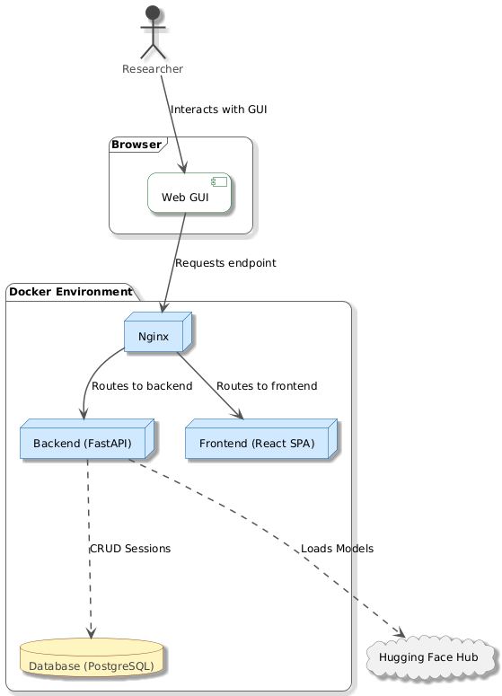
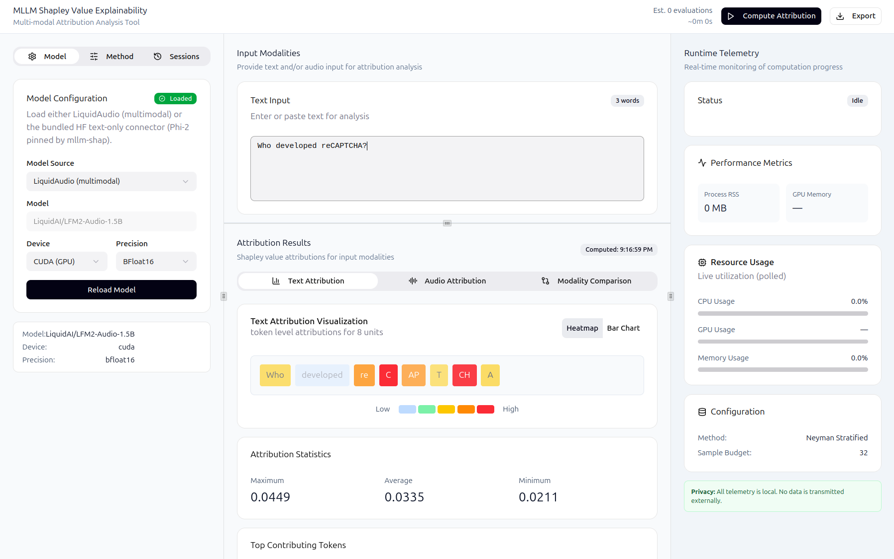
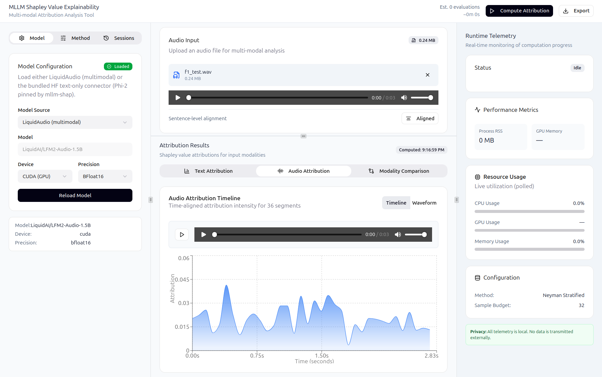

Companion GUI - SHAP Multi-Modal LLM Explainer#
Overview#
Separate repository (mvishiu11/shap-mllm-explainer) contains a companion,
GUI-first application for exploring token-level and audio time-series attributions produced by mllm_shap.
The app is intentionally containerized (Docker Compose) to provide a reproducible, production-like environment.
Architecture#
The stack is composed of:
Frontend: React (Vite build), served by Nginx
Backend: FastAPI
Database: PostgreSQL (stores sessions and configuration snapshots)
This can be seen on the following diagram:
{kind=link}

At a high level, the frontend:
loads a model/connector mode
accepts text input and optional audio
triggers explainability jobs
displays attribution visualizations
persists and reloads sessions
The backend:
validates inputs and model state
runs inference and SHAP computation (via
mllm_shap)exposes progress/cancel/logs for long-running jobs
stores sessions in the database
Some examples of the running GUI are shown below:
{kind=link}

{kind=link}

Running the application (Docker Compose)#
CPU#
From shap-mllm-explainer/:
docker compose up --build
Open the UI:
http://localhost
GPU (optional)#
Prerequisites on the host:
NVIDIA driver installed and working (
nvidia-smiworks)NVIDIA Container Toolkit configured for Docker
Run:
docker compose -f docker-compose.yaml -f docker-compose.gpu.yaml up --build
Quick verification inside the backend container:
docker compose exec backend uv run python -c "import torch; print('cuda_available=', torch.cuda.is_available()); print('torch_cuda=', torch.version.cuda)"
Local development (without Docker)#
Backend#
From shap-mllm-explainer/backend/:
uv sync --dev
uv run uvicorn app.main:app --reload --host 0.0.0.0 --port 8000
Frontend#
From shap-mllm-explainer/web/:
npm i
npm run dev
Configuration#
Frontend configuration#
VITE_API_BASE_URL: backend base URL (defaults to/api)
Backend configuration#
DATABASE_URL: async SQLAlchemy URL (Compose usespostgresql+asyncpg://...)LOG_LEVEL: log verbosity (e.g.INFO/DEBUG)UV_PYTHON: set in Compose to preventuvfrom downloading another CPython inside the container
Compose files to inspect:
shap-mllm-explainer/docker-compose.yamlshap-mllm-explainer/docker-compose.gpu.yaml
Backend API surface (high level)#
The backend exposes FastAPI routes under the /api prefix.
General:
GET /health
ML endpoints (/api/ml):
POST /models/load— load a supported connector/modePOST /predict— run a prediction (text-only, or text+audio for LiquidAudio mode)POST /explain— start an explainability job (supports text and optional audio)GET /progress/{job_id}— progress reportingPOST /cancel/{job_id}— cooperative cancellationGET /logs/{job_id}— retrieve the last log lines from a jobGET /telemetry— runtime telemetry (CPU/RAM/process + GPU if available)GET /diagnostics— basic model/device diagnostics
Notes:
Audio uploads are accepted only when the backend is running in LiquidAudio mode.
Text-only mode rejects audio requests with a clear 400 response.